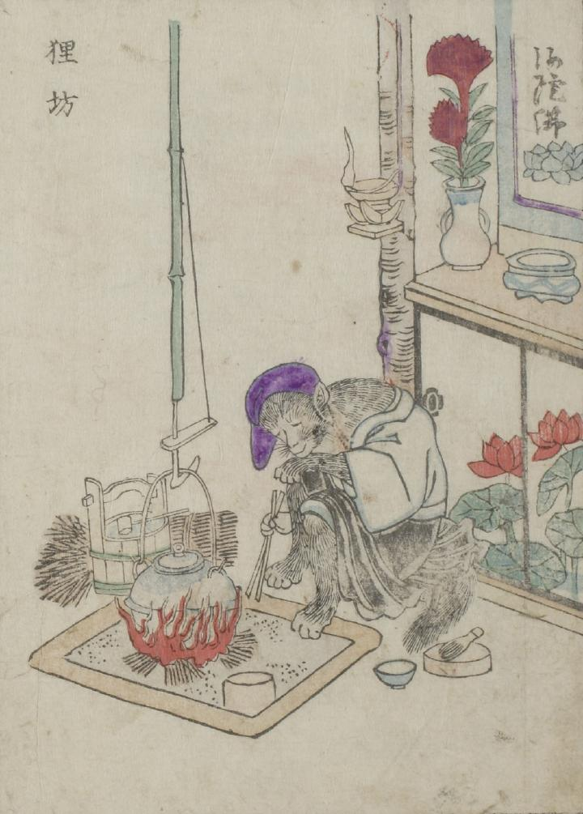

← 图鉴索引

僧侶に化けた狸が囲炉裏端に座っている。紫の頭巾をかぶり、手には火箸を持っている。
出典：親書誌：U426_nichibunken_0051：怪物画本；カイブツエホン／日付：2006／資源識別子：U426_nichibunken_0051_0030_0000
Copyright (c)2010- International Research Center for Japanese Studies, Kyoto, Japan. All rights reserved.